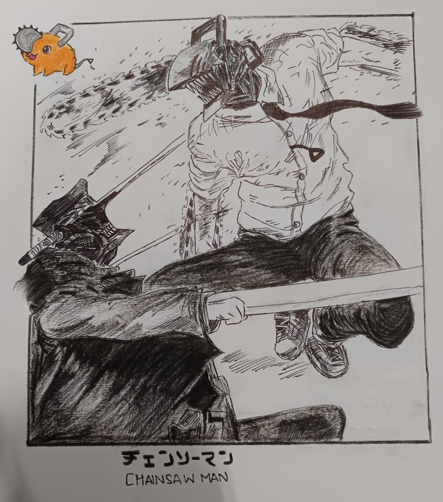
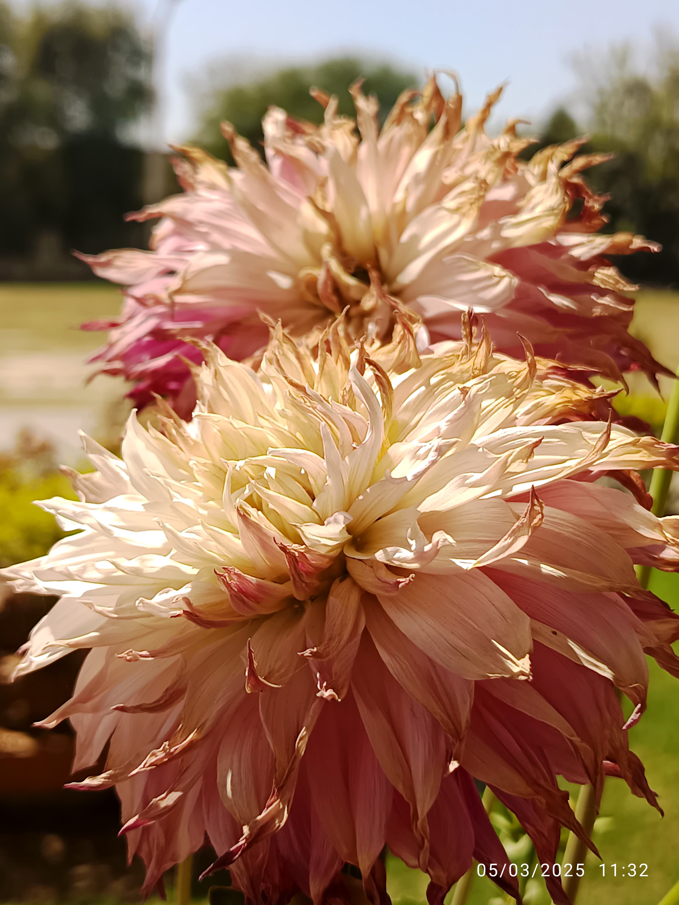
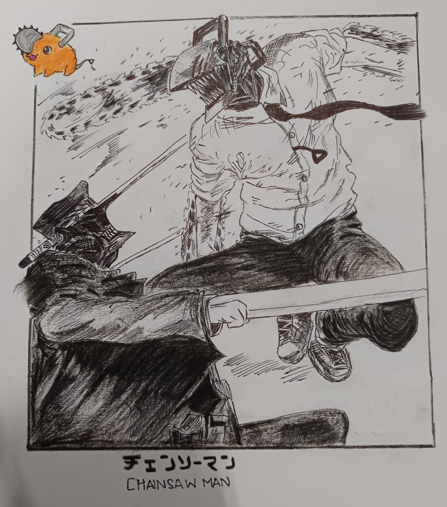
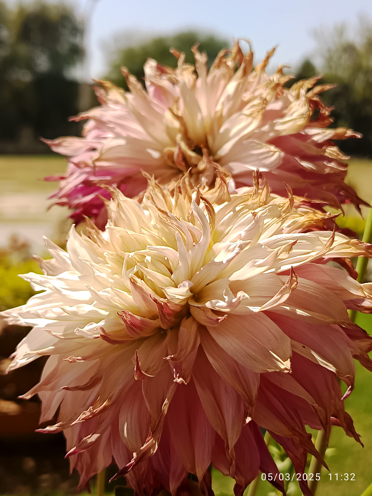

Drawing
Playing Badminton

Watching Anime and Reading Mangas

Listening to Music

Photography
Cooking

Watching science related documentaries and videos

I'm Kartik S Basant, an upcoming sophomore at Indian Institute of Technology Kanpur, majoring in Computer Science and Engineering. With a strong interest in problem-solving and a growing passion for computer science, I enjoy exploring new things from a wide range of domain stretching from science and technology, literature, art, music and entertainment and many others. I'm always looking to deepen my overall skills while collaborating on impactful projects, and I'm excited to continue learning, building, and contributing as I move forward in my academic, personal and professional journey.
I have done my schooling from Kendriya Vidyalaya from class-I to class-X, securing 97% in Class 10th board exams and from Gujarat Public School, Atladara in class-XI and XII, securing 98.2% in Class 12th board exams. Throughout my school journey I have tried to focus on overall development and have tried participating in competitions and activities spreading across all domains. I was admitted to IITK for a Computer Science and Engineering degree on the basis of my exceptional performance in JEE examinations. I had secured AIR-71 in JEE Mains 2024 and AIR-222 in JEE Advanced-2024, which was conducted by NTA and IIT Madras respectively. My current CPI at IITK after completion of second semester is 9.1
I have way too many things I would like to try out ranging across many different domains, but if I have to narrow it down; following are some things I particularly enjoy doing the most :3
Drawing
Playing Badminton
Watching Anime and Reading Mangas
Listening to Music
Photography
Cooking
Watching science related documentaries and videos
You can reach out and connect with me via: